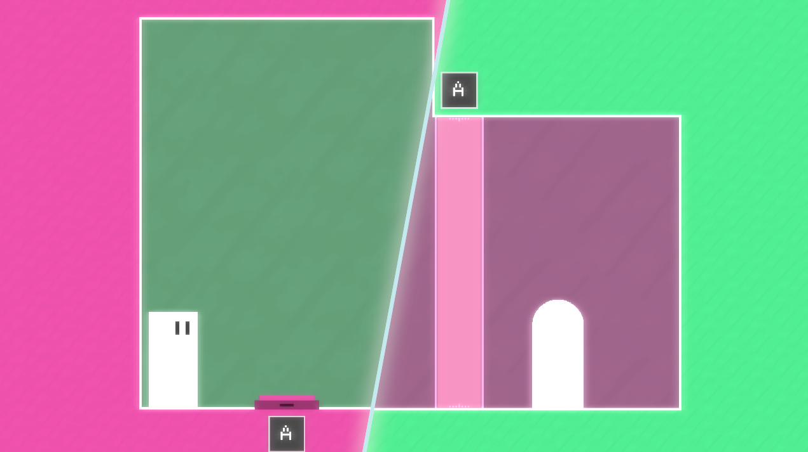
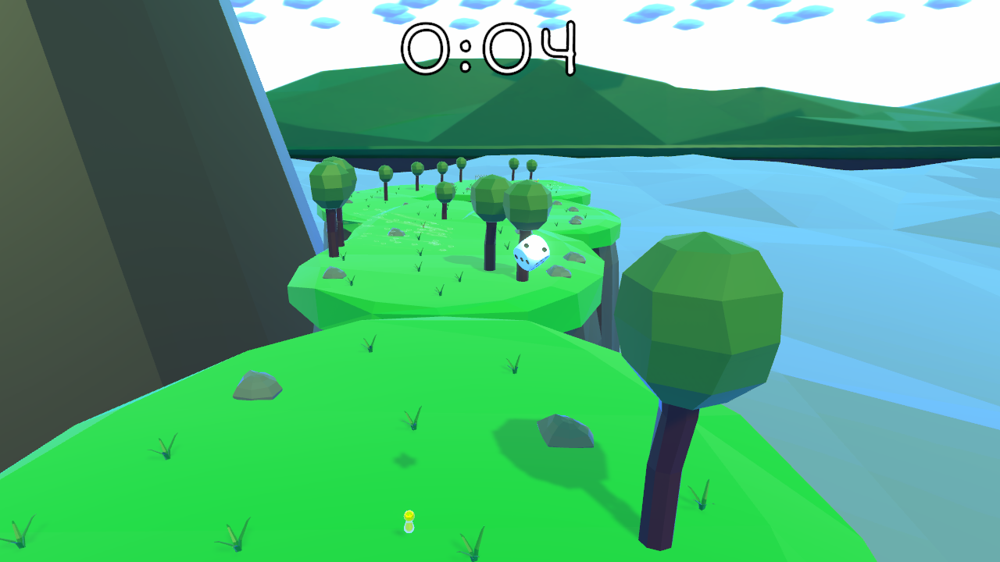

Mi itt, az OKNO Gamesnél mindig is azt hittük, hogy a játékoknál mindig az élvezet az első, nem pedig a látvány vagy a történet. Címkatalógusunk a műfajok széles skáláját tartalmazza, az FPS shooterektől a rage platformer játékokig.
Több éve fejlesztünk játékokat és ezzel fejlesztjük tudásunkat, hogy nagyon rövid idő alatt mesteri szintű játékokat tudjunk készíteni. Mivel többnyire Game Jams-ekre (intenzív fejlesztési versenyek szigorú időhatárokkal) fejlesztettünk projekteket, óriási, komplikált játékokat még nem tudunk bemutatni, de a fejlesztés során elsajátított készségekkel biztosak vagyunk abban, hogy képesek leszünk valami nagyot alkotni a közeljövőben.
|

Törekszünk nem csak a grafikai, hanem a játék élmény tökéletesítésére. Olyan játék mechanizmusok foglalkoztatnak minket, amik a legkülönlegesebb élményt tudják játékosaink számára nyújtani. |
|

Egyetlen kihívás sem tud minket megállítani. A lehető legkreatívabb megoldásokra törekszünk minden megmérkőztetésnél ami szembe jön velünk. |